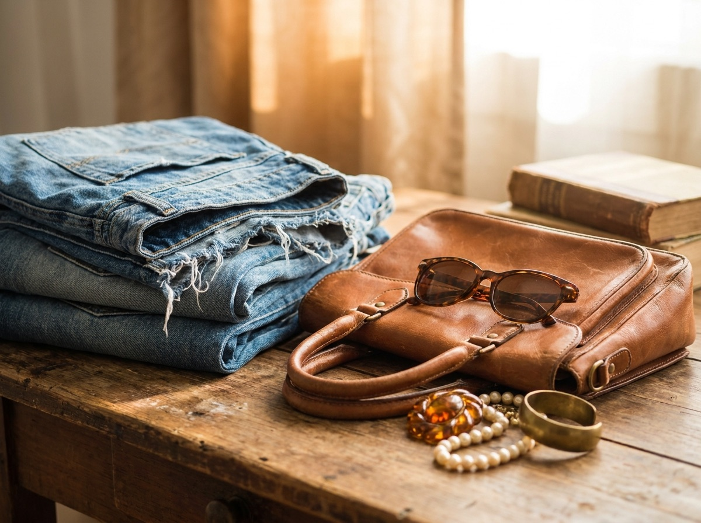

The 1970s
Workwear, prairie, and the wide-collar pieces and corduroy that still read modern today.
Central Ave / Little Brooklyn / Dover, NH
A curated shop of 1970s through Y2K clothing for all sizes and genders, picked one piece at a time by a fine-arts-trained eye. Home to New Hampshire's largest collection of vintage denim.
Open Wednesday through Sunday
What's on the racks
Nothing here is here by accident. Every piece is hunted, cleaned, and chosen for the rack. You get range across four decades without the wading.
Workwear, prairie, and the wide-collar pieces and corduroy that still read modern today.
Band tees, leather, oversized knits, and the easy basics people keep coming back for.
Low-slung denim, slip dresses, and the early-2000s finds that get harder to source every year.
A small, rotating shelf of vintage home decor and odd good things worth bringing home.

Preview imagery. We'll swap this for real photos of your denim wall.
The thing we're known for
Wall to wall jeans, jackets, and trucker styles across sizes and decades. Stiff raw pairs, broken-in Levi's, painter's denim with real history in the seams. If you have been chasing the right fit, this is the rack to dig through.
The shop
HELLO AGAIN is owned and run by Rebecca Earle, who comes from a fine-arts background in painting and printmaking. That curatorial eye is the whole point. Color, cut, and condition all get a vote before anything makes it onto the floor.
The shop has been part of Dover since around 2019, on Central Ave in the Little Brooklyn arts district near City Hall. There's a sister shop too, Cotillion Bureau, down in Portsmouth. The throughline is the same. Well-edited, sustainability-minded vintage you can feel good about keeping.
Come by
270 Central Ave
Dover, NH 03820
Little Brooklyn arts district, near City Hall. A walkable downtown stretch.
Open Wednesday through Sunday.
Closed Monday and Tuesday.